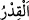
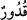
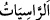
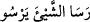
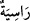
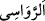
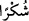
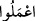

bir kazanı vardı. Onun gölgesinde gölgelenilir, devenin sırtından elini uzatan kimse
ancak ona ulaşabilirdi. Bir defasında bu kazana bir çocuk düşmüş ve boğulmuştu.
Abdullah bu büyük kazandan her gün fakirlere yemek yedirirdi.
Peygamberimizin (s.a.) de dört kişinin taşıyabildiği bir kazanı vardı. Beyaz mânâsında
bu kazana “el-garrâ” denirdi. Kuşluk vakti olup insanlar kuşluk namazını kılınca
Peygamberimiz bu kazanı ortaya getirtti ve o kazanda tirit yemeği pişirilmişti. İnsanlar
kazanın etrafında toplandı. Cemaat çoğalınca Peygamberimiz (s.a.)’de diz çöküp oturdu.
Bir bedevî “Bu nasıl oturuş!” deyince Peygamberimiz (s.a.):“Allah beni kerim bir kul
yaptı. Cebbar/zâlim ve inatçı yapmadı.” buyurdu. Sonra “Siz onun etrafından yeyin,
ortasını bırakın ki sofranız bereketli olsun.” buyurdu.[17]
eş-Şir’a’da der ki: Küçük tabak ve çanaklarda bereket yoktur. Yemek kabı toprak ve
ahşaptan olsun. Çünkü bunlar tevazua daha yakındır. Altın ve gümüş kaptan yemek
yemek ve içmek haramdır. Kalaysız bakır kaplarda yemek yemek mekruhtur. Yine bakır,
kurşun ve diğer madenlerin terkibinden/alaşımından olan sarı/pirinç kaplarda yemek
yemek de böyledir.
“Sâbit kazanlardan ne dilerse yaparlardı.”
el-Müfredât’ta geçtiği üzere “
” içinde et pişirilen şeyin adıdır. Çoğulu “
”dür. “
” bir şeyin sâbit olduğu zaman söylenen “
” kökünden “
”nin
çoğuludur. İşte bu sebeple dağlara “
” denilmiştir. Mânâ ise şöyledir: Sacayakları
üzerinde sâbit, çok büyük oldukları için onların üzerinden indirilemeyen ve yerlerinden
oynatılamayan kazanlardan… Yemen’de olan bu kazanlara merdivenlerle çıkılırdı. Halâ
Şam’ın bazı şehirlerinde bu şekilde taştan yapılmış kazanlar/tencereler mevcuddur. Bu
kazanlar dağlardan temin edilirdi. Ya da bunlar bakır tencerelerdir. Bunlar sacayaklar
üzerinde olur veya ayakları kendilerinden olurdu. Nitekim el-Kevâşî’de böyle
geçmektedir.
et-Te’vîlâtü’n-Necmiyye’de der ki: “havuzlar kadar (geniş) leğenlerden, sâbit
kazanlardan…” sözüyle Allah Teâlâ, peygamberlerin ve velîlerin yediği Allah’ın
sonsuz ziyâfet sofrasına işâret etmektedir. Çünkü onlar Allah katında gecelerler.
Nitekim Peygamberimiz (s.a.): “Ben Rabbimin nezdinde gecelerim. O beni yedirir,
içirir.”[18] buyurmuştur.
“Ey Dâvud âilesi! Şükredin” Burada kasdedilen Süleyman (a.s.)’dır. Çünkü bu söz
onun kıssasının içinde geçmiştir. Çoğul olarak hitap edilmesi, tâzim içindir. Ya da
kasdedilen Süleyman (a.s.)’ın çocukları, kendilerine harcama yaptığı kimseler veya
ümmetinden kendilerinden şükür hâsıl olan herkestir. Nitekim Bahru’l-ulûm’da böyle
geçer.
“
” kelimesi sebep bildirmek için olabilir. Yâni Allah için çalışın ve size verdiğim
üstünlük ve diğer nimetlerden dolayı Allah’a şükredin. Çünkü nimetin zâhir olması gibi
şükrü de izhar edip açığa çıkarmak lâzımdır. Yine bu kelime “
”nun masdarı
olabilir. Çünkü mün’im (nimet veren) için amel etmek ona şükretmektir. Bu durumda bu